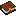
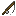
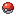

Atracción I · II · III
Decide qué Pokémon pueden picar: algunos solo aparecen con Atracción y otros pasan a ser más comunes con ella (por ejemplo Staryu, Lapras, Wailmer o Relicanth). Además, pican antes.
POKÉ CAÑA Y CEBOS
Con la Poké Caña sacas Pokémon del agua. Los encantamientos deciden qué puede picar y con qué rareza, y los cebos de bayas te ayudan a conseguir justo lo que buscas: naturaleza, IVs, tipo, shiny…

Atracción y Suerte marinaEn la mesa de herrería: Molde de herrería + caña de pescar + cualquier Poké Ball. La Ball solo cambia el aspecto del flotador.
Arrastra la baya sobre la caña en el inventario (como con los sacos) o llévala en la otra mano. Se gasta cuando sacas un Pokémon.

Lanza al agua y recoge cuando el flotador se hunda. Puede salir un Pokémon, un objeto o «Ni siquiera un mordisco…».

El Pokémon sale del agua listo para combatir. Para el trabajo de Pescador tienes que pescarlo y capturarlo.
Decide qué Pokémon pueden picar: algunos solo aparecen con Atracción y otros pasan a ser más comunes con ella (por ejemplo Staryu, Lapras, Wailmer o Relicanth). Además, pican antes.
Sube la probabilidad de que salga un Pokémon de rareza más alta. Desde el nivel I también puedes pescar tesoros, y cada nivel suma +2,5% a los patrones raros de Magikarp.
Hacen que la caña dure mucho más. La caña ideal: Atracción III + Suerte marina III + Irrompibilidad III + Reparación.
Cada baya o fruta puesta en la Poké Caña tiene su efecto. Filtra por lo que buscas: naturaleza, IVs, EVs, tipo, grupo huevo, shiny… En Diosesmon los Poké Snacks están desactivados: los cebos solo funcionan en la caña.
Pokémon de las generaciones 1 a 4 que pican con la Poké Caña, con su rareza (sin encantamiento y con Atracción) y dónde pescarlos.
Con Suerte marina I o más, en aguas abiertas, la caña también puede sacar estos objetos de evolución:
 Patrones de Magikarp5% con cualquier caña, +2,5% por cada nivel de Suerte marina (hasta 12,5%).
Patrones de Magikarp5% con cualquier caña, +2,5% por cada nivel de Suerte marina (hasta 12,5%). Whiscash NeroSolo pica con la Poké Caña hecha con una Master Ball.
Whiscash NeroSolo pica con la Poké Caña hecha con una Master Ball. Wooper CorazónNecesita la Poké Caña con Amor Ball y Confite Corazón como cebo.
Wooper CorazónNecesita la Poké Caña con Amor Ball y Confite Corazón como cebo.Hay una por cada tipo de Poké Ball. Todas pescan igual: solo cambia el flotador y el color del sedal. Para cambiarla, vuelve a pasarla por la mesa de herrería con otra Ball.